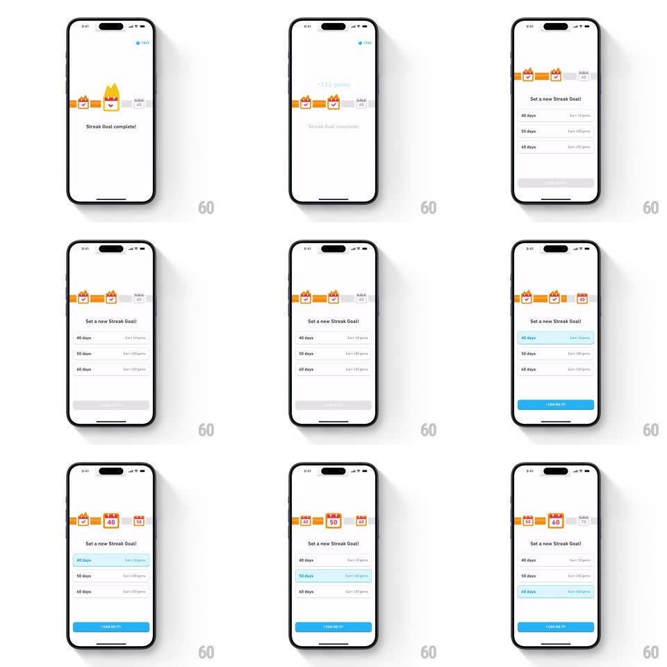

Media
Frame-by-frame

Rebuild this interaction 1:1: Duolingo's streak-goal picker - after the "Streak Goal complete!" burst, the "Set a new Streak Goal!" sheet pairs a horizontal milestone calendar with a list picker that stay in sync, ending on the I CAN DO IT! button.

Rebuild this interaction 1:1: Duolingo's streak-goal picker - after the "Streak Goal complete!" burst, the "Set a new Streak Goal!" sheet pairs a horizontal milestone calendar with a list picker that stay in sync, ending on the I CAN DO IT! button.
## Integration
Integration: stack-agnostic spec - springs given as stiffness/damping, timed motions as duration + curve; map every value to your framework and animation library of choice.
## Scene
A sheet over the streak screen: up top a horizontal strip of milestone tiles (flame icons with day counts 40 / 50 / 60) connected by a progress line; below, a list of goal rows ("40 days - Earn 25 gems", "50 days", "60 days") and a blue I CAN DO IT! button.
## Motion spec
Pattern: synchronized calendar strip + list selection, ~400ms per change.
- Completion beat: the current streak tile flashes with a confetti pop (8 pieces, 400ms) and "Streak Goal complete!" fades in before the picker appears (300ms slide-up).
- Select: tapping a list row highlights it (blue tint fades in, 150ms) and the calendar strip scrolls so that milestone centers (spring ~320/24, 350ms); the milestone tile fills orange and its flame pops (scale 0.8 -> 1.15 -> 1, spring ~400/16).
- Strip swipe: dragging the strip likewise updates the selected row - the two controls never disagree.
- The progress line fills up to the chosen milestone (300ms, ease-out).
- CTA: I CAN DO IT! presses (scale 0.97, 100ms) and confirms with the milestone tile pulsing once.
## Calibration
- Sync is bidirectional - strip and list are one selection.
- Only the chosen milestone is filled; earlier ones show their completed check.
## Reduced motion
Selection changes are instant; strip snaps without spring.
## Don't miss
- The strip centers the active milestone, not just highlights it.
- Gem rewards ride along in each list row.